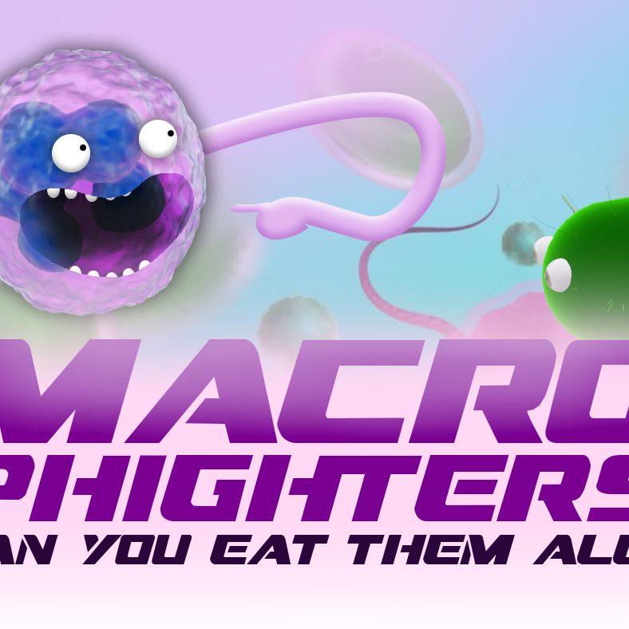
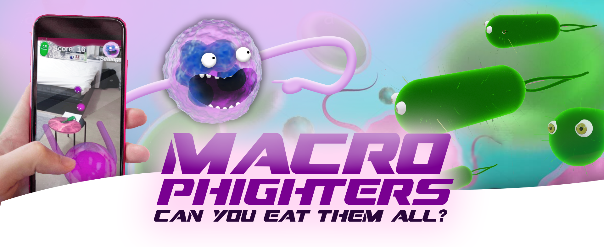

Unity, C#, Git
Description: An AR Game based on the immune system reacting to bacteria entering the body. AR provided with Ar foundations Link:
About the Project
Macrophighters is an engaging AR game where players try to eat incoming bacteria before they reach the bloodstream and cause fever. The project focused on creating an interactive AR experience, visually appealing graphics, and educating users about the immune system.
The Development of the App
Development began with a simple Unity MVP featuring basic game objects and straightforward logic. Improvements included detailed 3D models created in Blender, AR image tracking to define the game field, and enhanced interactions using haptics, sounds, and UI controls. Game logic evolved to include randomized bacteria movement and a counter to end the game if too many bacteria were missed.
Challenges & Learnings